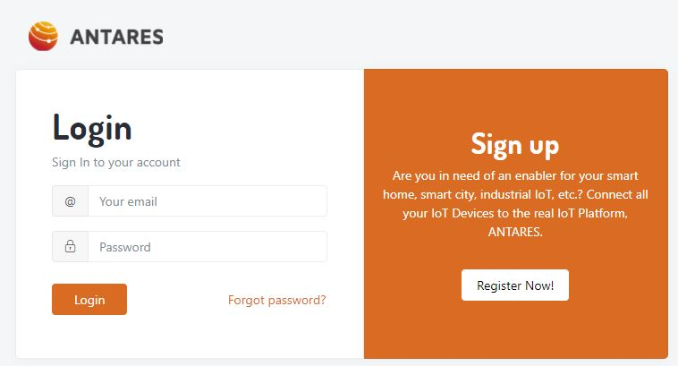
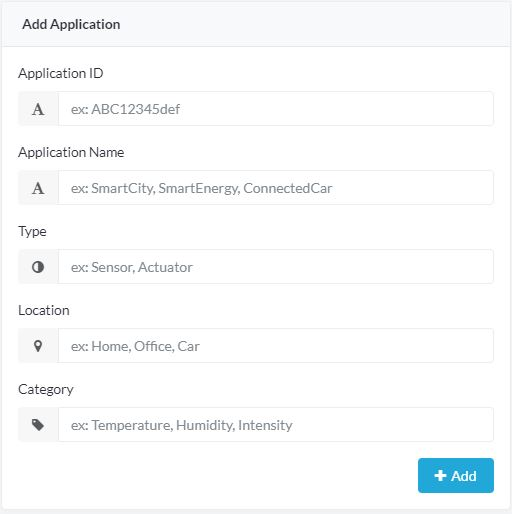
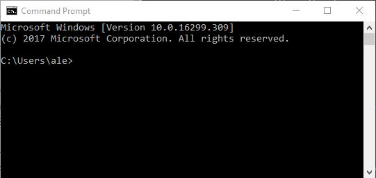
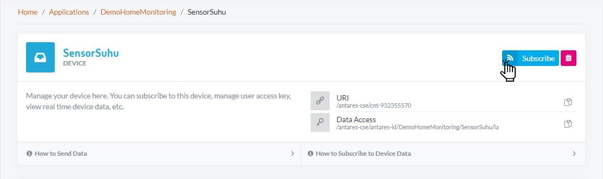

Prasyarat
- Memiliki software NGROK. Jika Anda belum memilikinya, silakan buka link berikut link. NGROK.
- Memiliki Node JS. Jika Anda belum memilikinya, silakan buka link berikut link. Node JS.
- Memiliki POSTMAN. Jika Anda belum memilikinya, silakan buka link berikut link. POSTMAN.
Langkah-langkah
- Login akun Antares Anda melalui Antares Console https://console.antares.id
- Buat Aplikasi, jika Anda telah memilikinya, abaikan untuk melanjutkan ke proses berikutnya. 
- Buat Device, jika Anda telah memilikinya, abaikan untuk melanjutkan ke proses berikutnya.

- Mulai dengan menuliskan kode program untuk mendapatkan data dari ANTARES. Anda dapat menggunakan kode program berikut ini:
Copy kode program tersebut ke penyimpanan lokal komputer Anda kemudian simpan dalam format .js extension. Dalam tutorial ini, kami simpan dengan monitor.js
var express = require('express'); var app = express(); var server = require('http').createServer(app); var bodyParser = require('body-parser'); var util = require('util') app.use(bodyParser.json()); app.use(bodyParser.urlencoded({ extended: false })); app.post('/monitor', function(req, res, next) { console.log(util.inspect(req.body, false, null)); res.send('ack'); }); server.listen(9000, function() { console.log('App listening on port 9000'); });
Buka command prompt (windows) atau terminal (linux)
Masukkan direktori file kode program yang telah Anda simpan sebelumnya
Jalankan kode program dengan melakukan sesuai dengan gambar dibawah ini.
Kode program yang berhasil dapat dilihat seperti pada gambar berikut ini.
Mendapatkan masalah? Jika ya, eksekusi sintaks berikut ini. Jika tidak, abaikan proses ini.
Install paket yang belum terinstall.
Lakukan Allow Access ketika sedang menjalakan kode program.
Mulai menjalankan NGROK. NGROK akan membantu Anda untuk membuka localhost Anda ke public domain.
Pertama, masuk ke direktori NGROK. Pastikan Anda sudah mengekstraknya, sehingga sudah dalam format file .exe.
Jalankan NGROK dengan menggunakan port 9000 dengan cara sebagai berikut:cd download-path/ngrok.exe port 9000Buka Device yang telah Anda buat sebelumnya. Klik tombol Subscribe dan akan muncul menu pop up.
Tambahkan /monitor pada akhir URL NGROK seperti dibawah ini.
Ketika Anda telah berhasil mensubscribenya, akan muncul pop up.
Mari periksa apakah server Anda mendapatkan notifikasi dengan perangkat emulator menggunakan POSTMAN. Silakan buka POSTMAN, dan isi semua parameter dengan informasi berikut ini.
Field Value URL https://platform.antares.id:8443/~/antares-cse/antares-id/your-project-name/your-device-name
or
https://platform.antares.id:8443/~/antares-cse/your-device-ID
Note:your-device-IDmust be starting withCNT. e.g.CNT-842419289Method POSTHeader Key Value X-M2M-Origin access-id:access-passwordContent-Type application/json;ty=4Accept application/jsonBody { { "m2m:cin": { "xmlns:m2m": "http://www.onem2m.org/xml/protocols", "cnf": "application/json", "con": "{\"temperature\":30.3, \"humidity\":35.1}" } }Selama Anda mengirimkan data, aplikasi server monitor Anda akan mendapatkan data yang server dapatkan. Data tersebut dapat dilihat seperti berikut ini.
Selamat!! Anda baru saja mendapatkan notifikasi data.